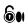

FreeMedium
Ad-Free Paywall Unlocker
Ready
Current Tab
Detecting...
🔓
Unlock Current Tab
📋
Markdown
☆
Active Mirror
Freedium Mirror (freedium-mirror.cfd)
Freedium (freedium.cfd)
Freedium Web (Vercel)
Archive.is (Newest)
Archive.is (Oldest)
Go
Smart Automation & Purification
Auto-Unlock on Paywall
Automatically redirect when a locked story is detected
Floating Unlock Pill
Show 1-click "Unlock" button on Medium & 6 publishers
Auto-Fallback Mirror
Switch mirror automatically if current mirror fails/times out
Purify Mirror Popups & Ads
Hide donation banners and announcement toasts on mirrors
Open Unlocked in New Tab
Keep original article tab open when unlocking
Recent
Saved ★
Clear